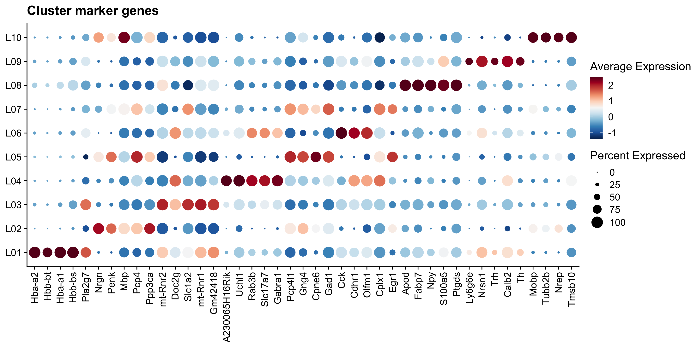
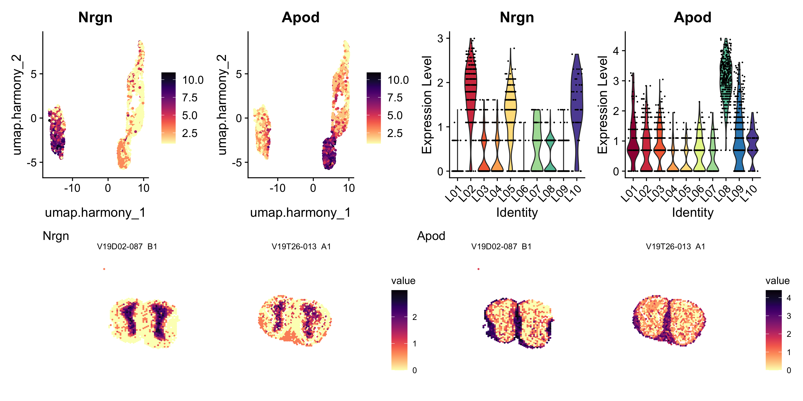

5.7 Find marker genes
To see which genes are present in each cluster we can run the Seurat function FindAllMarkers().
gene_markers <- FindAllMarkers(se.cor, only.pos = TRUE)
gene_markers$cluster_annotation <- factor(plyr::mapvalues(x = gene_markers$cluster, from = 0:9, to = cluster_annotations),
levels = c(paste0("L0", 1:9), "L10"))top3_genes <- gene_markers %>%
dplyr::filter(p_val_adj < 0.01) %>%
dplyr::group_by(cluster_annotation) %>%
dplyr::top_n(wt = avg_log2FC, n = 3) %>%
dplyr::arrange(cluster_annotation)
datatable(top3_genes, rownames = F, caption = paste("Top three marker genes for each cluster"))top5_genes <- gene_markers %>%
dplyr::filter(p_val_adj < 0.01) %>%
dplyr::group_by(cluster_annotation) %>%
dplyr::top_n(wt = avg_log2FC, n = 5) %>%
dplyr::arrange(cluster_annotation)
DotPlot(se.cor, features = unique(top5_genes$gene), group.by = "cluster_annotation") +
scale_colour_gradientn(colours = RColorBrewer::brewer.pal(n = 11, name = "RdBu") %>% rev()) &
# coord_flip() &
labs(title="Cluster marker genes") &
theme(axis.title = element_blank(), axis.text.x = element_text(angle = 90, vjust = 0.5, hjust = 1))

(#fig:marker_dotplot)Dot plot of top 5 marker genes per cluster.
Do you see any genes that you recognize?
Let’s do a few more plots :)
col_scale <- viridis::magma(n = 11, direction = -1)
col_spectral <- RColorBrewer::brewer.pal(10, name = "Spectral")
plot_genes <- c("Nrgn", "Apod")
p1 <- FeaturePlot(se.cor, features = plot_genes, cols = col_scale, reduction = "umap.harmony")
p2 <- VlnPlot(se.cor, features = plot_genes, ncol = 2, group.by = "cluster_annotation", cols = col_spectral)
p3 <- ST.FeaturePlot(se.cor, features = plot_genes, ncol = 2, grid.ncol = 2, show.sb = FALSE, cols = col_scale, label.by = "slide_id")
(p1 - p2)/p3

(#fig:plot_markers_spatial)Top left: marker expression in UMAP embedding, top right: marker expression per cluster as a violin plot, bottom: marker expression on tissue sections.
Here we can see how the neuronal gene Nrgn is highly expressed in clusters 1, 2, and 9, which are all present in the inner parts of the MOB tissue (granule cell layer etc), while the Apod gene is a marker of oligodendrocytes and is expressed in clusters 0 and 5, present in the outermost layers of the tissue.